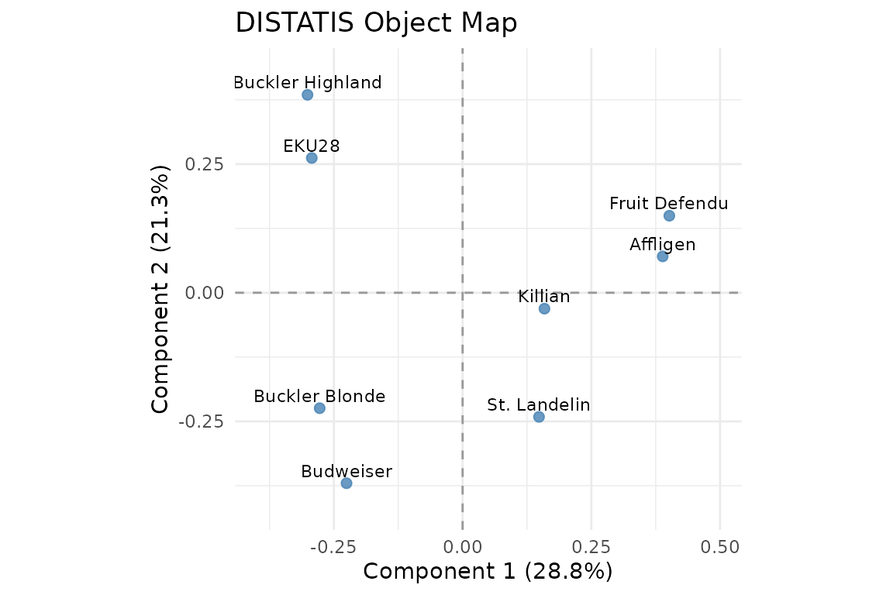
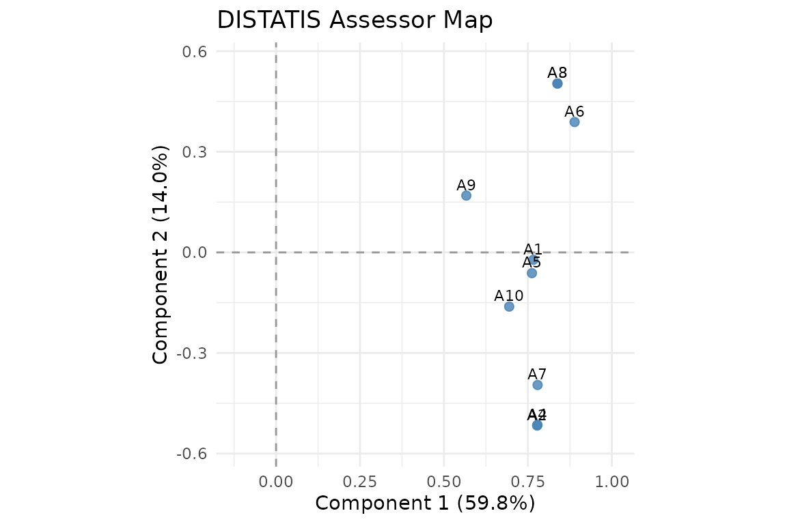
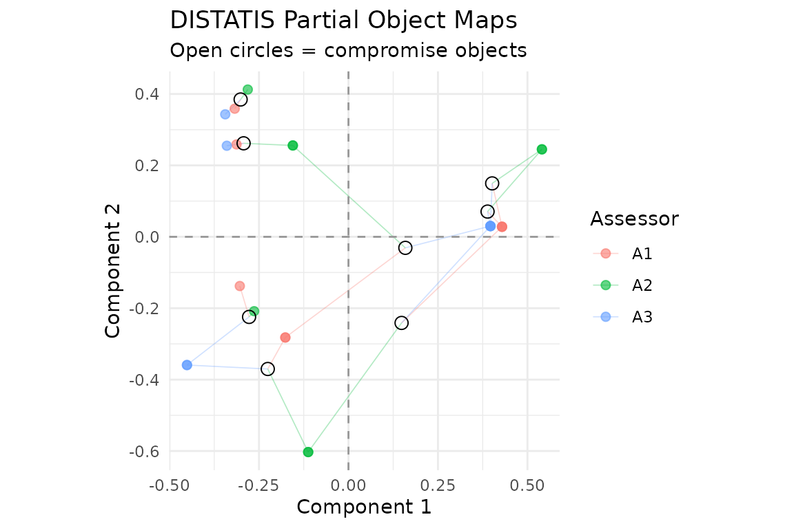

DISTATIS combines several distance matrices on the same objects. For
a sorting task, each assessor groups products by perceived similarity.
The analysis gives an object map representing the panel’s consensus, a
separate assessor map showing agreement between sorts, and partial
object maps showing each assessor’s view. Use covstatis()
when your inputs are covariance or connectivity matrices; use
distatis() when they are distances.
Sorting the beers
Abdi, Valentin, Chollet, and Chrea (2007) report eight beers sorted by ten assessors. The following is Table 1 of their paper. Numbers identify groups within each assessor’s column; the group labels themselves carry no numeric meaning.
partitions <- matrix(c(
1,4,3,4,1,1,2,2,1,3,
4,5,2,5,2,3,1,1,4,3,
3,1,2,3,2,4,3,1,1,2,
4,2,3,3,1,1,1,2,1,4,
1,5,3,5,2,1,1,2,1,3,
2,3,1,1,3,5,4,4,3,1,
1,4,3,4,1,1,2,2,2,4,
5,2,4,2,4,2,5,3,4,5
), 8, 10, byrow = TRUE, dimnames = list(
c("Affligen", "Budweiser", "Buckler Blonde", "Killian", "St. Landelin",
"Buckler Highland", "Fruit Defendu", "EKU28"), paste0("A", 1:10)))
distances <- sorting_distances(partitions)
fit <- distatis(distances, ncomp = 4)
#> Warning: `prep()` was deprecated in multivarious 0.3.0.
#> ℹ Please use `fit()` instead.
#> ℹ The prep() function is deprecated. Use fit() for a more standard interface.
#> ℹ The deprecated feature was likely used in the multivarious package.
#> Please report the issue to the authors.
#> This warning is displayed once per session.
#> Call `lifecycle::last_lifecycle_warnings()` to see where this warning was
#> generated.
fit
#> DISTATIS: 8 objects, 10 assessors
#> Retained axes: 4 object, 4 assessor
#> Normalization: mfa; compromise quality: 59.8%
round(fit$alpha, 3)
#> [1] 0.100 0.101 0.109 0.101 0.099 0.116 0.101 0.109 0.074 0.090sorting_distances() assigns zero to a pair placed in the
same group, and one to a pair placed in different groups. It accepts
matrices or data frames, including columns with character labels or
factors. An all-in-one-group sort has no contrast and is rejected during
fitting because its RV similarities are undefined.
Object and assessor maps
ggplot2::autoplot(fit, type = "objects", labels = TRUE)
Consensus map of the eight beers.
The default normalization divides each assessor’s centered Gram matrix by its largest eigenvalue. DISTATIS then computes RV similarities between those tables, uses the leading RV eigenvector to obtain nonnegative weights summing to one, and eigendecomposes the weighted compromise. High assessor weight means agreement with this panel; it is not an external measure of accuracy.
ggplot2::autoplot(fit, type = "subjects", labels = TRUE)
Assessor principal coordinates in RV space.
Object and assessor maps have different spectra. Their axes need not
have the same rank or interpretation. Requesting ncomp = 4
retains at most four positive axes in each map. Axis percentages always
use the full inertia, rather than renormalizing the retained axes to
100%.
round(fit$eigenvalues, 3)
#> [1] 0.664 0.490 0.404 0.339 0.228 0.130 0.050 0.000
round(fit$interstructure_eigenvalues, 3)
#> [1] 5.983 1.405 0.756 0.708 0.531 0.218 0.194 0.146 0.059 0.000
fit$compromise_quality
#> [1] 0.5982768
sum(fit$inertia[1:4])
#> [1] 0.8228512These reproduce the paper’s eigenvalues and approximately 60% agreement summary. The first four object axes account for 82.285% of the computed inertia. The supplied author manuscript’s prose gives 84%; that figure does not agree with its eigenvalues, so the package reports the computed ratio.
plot_partial_scores(fit, blocks = 1:3)
Partial maps for three assessors, connected to the compromise.
Each partial map contains one point per object. The compromise is
their weighted mean, using fit$alpha. These maps describe
variation across assessors; their spread is not a confidence region.
weighted_partial <- Reduce(`+`, Map(`*`, fit$partial_scores, fit$alpha))
max(abs(weighted_partial - multivarious::scores(fit)))
#> [1] 1.373901e-15plot_block_weights(fit) and
plot_block_similarity(fit) display the weights and RV
matrix. plot_variance(fit) shows the complete object
spectrum; plot_variance(fit, axes = "subjects") shows the
assessor spectrum.
General distances and squared distances
distatis() accepts a list of dist objects
or square numeric matrices, a three-dimensional
object-by-object-by-assessor array, or a single distance table. Objects
must have the same order and, when supplied, consistent names in every
table. Unnamed inputs are aligned by position.
coordinates <- cbind(c(0, 1, 3, 5), c(0, 2, 1, 4))
D <- as.matrix(dist(coordinates))
ordinary <- distatis(D, norm_method = "none", ncomp = 3)
already_squared <- distatis(D^2, squared = TRUE, norm_method = "none", ncomp = 3)
max(abs(ordinary$compromise_full - already_squared$compromise_full))
#> [1] 0The default is ordinary distances, as produced by R’s
dist(). Set squared = TRUE only when the
entries are already squared. Binary sorting distances cannot reveal a
mistaken squaring convention, so check this setting when using other
distances. norm_method = "frobenius" and
"none" are also available; RV similarities determine
weights under all normalization choices.
Non-Euclidean distances with materially negative Gram eigenvalues are
rejected, with the assessor name and negative inertia in the error. No
correction is silently applied. The tol argument controls
relative numerical tolerances.
Supplementary assessors and reconstruction
Project a new assessor’s distances on the fitted objects using
project_distance(). For both the assessor coordinates and
object partial maps, use project_subjects(). Neither
function changes the fitted compromise.
partial <- project_distance(fit, distances[[1]])
max(abs(partial - fit$partial_scores[[1]]))
#> [1] 0
supplementary <- project_subjects(fit, distances[1:2])
supplementary$scalar_summaries
#> subject_id rv_coefficient distance_to_compromise distance_to_subspace
#> A1 A1 0.7680306 0.830311 0.8663089
#> A2 A2 0.8055173 1.006663 0.9252491
max(abs(supplementary$subject_scores - fit$subject_scores[1:2, ]))
#> [1] 1.221245e-15Supplementary distances use the fit’s squared setting
unless overridden. The RV summary compares with the full compromise.
distance_to_compromise is the Frobenius distance to that
full normalized matrix; distance_to_subspace is the
residual from the retained object subspace. These are different
diagnostics. Projecting new objects would require a separate
out-of-sample MDS procedure and is not supported here.
gram <- multivarious::reconstruct(fit)
compromise_distances <- multivarious::reconstruct(fit, what = "distance")
dim(compromise_distances)
#> [1] 8 8Reconstruction uses retained object components. Distances are in normalized compromise units, rather than any original assessor’s units. Use all positive object components when full reconstruction is required.
project_table_covariate() and
project_feature_covariate() project assessor and object
covariates into the corresponding maps. Their cosines and regression
slopes are uncentered; center covariates yourself if that matches your
question. The existing COVSTATIS inference adapters are explicitly
unavailable for DISTATIS: their raw-inner-product refits do not
implement its RV geometry.
Reference
Abdi, H., Valentin, D., Chollet, S., & Chrea, C. (2007). Analyzing assessors and products in sorting tasks: DISTATIS, theory and applications. Food Quality and Preference, 18, 627-640. https://doi.org/10.1016/j.foodqual.2006.09.003.